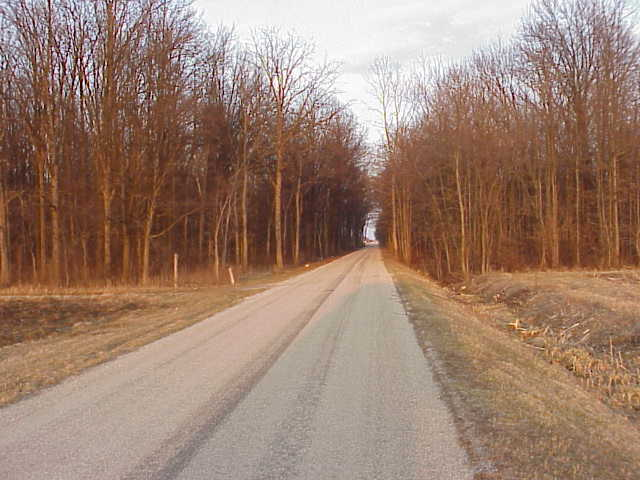
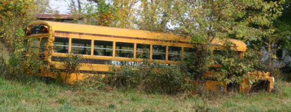
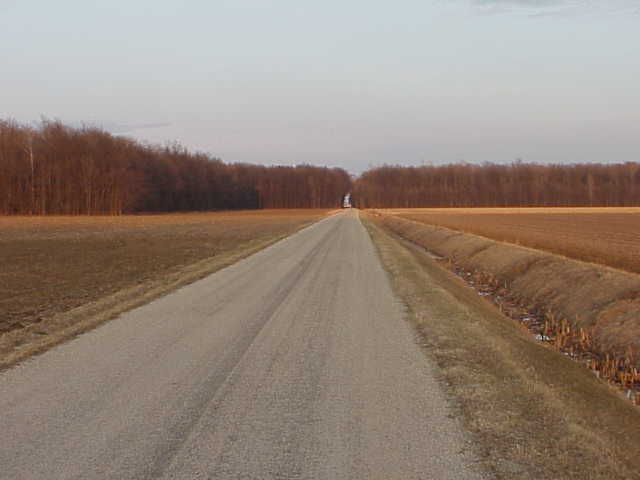
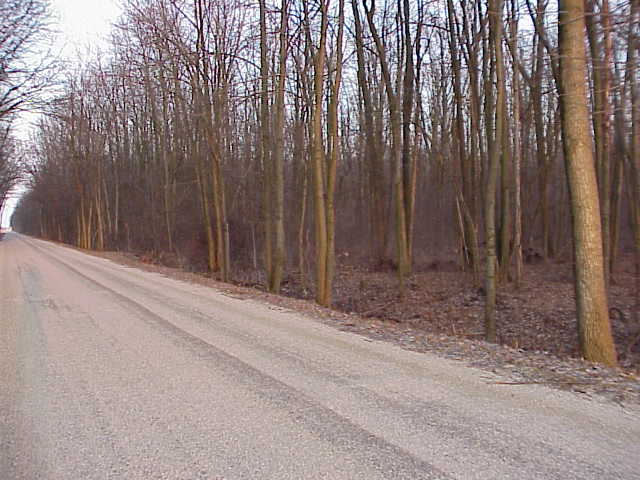
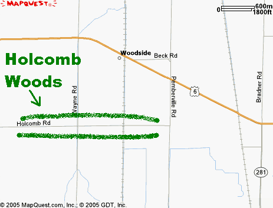

Holcomb Road and the woods beside it are the location of a series of regular ghost sightings. They are related to a school bus accident which supposedly happened there years ago. The bus (in most versions it belonged to a Catholic school) was traveling down Holcomb Road near Route 199 when the driver lost control, possibly because of the kids' rambunctiousness. We all remember what a pain in the ass kids are for school bus drivers. At any rate, this particular bus went careening off the road and wrecked badly in the tangled woods along Holcomb Road, not far from Pemberville.

Now if you visit late at night you might see a pair of red eyes in among the trees--or are they taillights? Park at the place where the woods begin and turn your headlights off and you will see a single headlight floating at you down the road. Your radio will go on the fritz and your car will have bizarre engine problems. Furthermore, you might see the ghosts of the kids standing creepily in among the trees. In the daytime it's possible to make out the face of the driver in the grain of one of the trees--the tree the bus wrapped around.

The school bus story was helped along (some might even say caused) by the long-time presence of a junked schoolbus in the woods. A local source informs me that this rusty bus was not far from the road, and that so many stories were told about it over the years that local teenagers made it a rite of passage to go there at night and attempt to contact the souls of those killed in the presumed bus accident. They also got drunk and spraypainted every available surface--evidence of which was still present when Hoss and I made our own pilgimmage there in early 2005. I saw no schoolbus, but we did see some profoundly deep, old ruts in the mud leading back into the woods--something akin to the remains of a dirt road, though the mud looked like it would suck a Freightliner down to the hood ornament. This was blocked by two massive logs the size of telephone poles. Trees nearby were spraypainted with words like BOO and SATAN, and empty containers of the cheapest beer imaginable littered the ditches on either side of the road.

The woods themselves are interesting. It's a relatively narrow band of crowded tree growth, stretching north-south just this side of the Sandusky County line. The woods are big if you walk in one direction, but when you cut through the other way on Holcomb Road, you're only in among the trees for about a quarter of a mile.

But it's a dark and freaky quarter-mile, one of those close-grown wooded areas where the branches meet overhead and turn the road into a kind of tunnel. In the daytime it's as shady as can be, but at night it's quite pitch black. It's not hard to see how a stretch of road like this could acquire a scary reputation. Without a junked schoolbus to remind everyone just who the ghosts are, other stories are being told about the haunted woods. One has a man killing his family with an axe in the area; they say his ghost is the one you're most likely to encounter there.
The following was sent to me by Veronica, who visited Holcomb Woods with some friends in 2004:
I thought I'd email you and let you know about our "little" experience at Holcomb Woods in Bowling Green, Ohio. One night me and three other friends decided to go to some so called "haunted" places. We were already in Bowling Green so we figured we'd go to Holcomb Woods. Well, we drove down the road and got between the woods and drove slowly. On the trees someone spray painted BOO, which didn't scare us at all. As we drove down we decided to park the car and turn it off. We sat like that for a few minutes and didn't see or hear anything so we drove down to the end of the road and turned around down the next road.
Well, this is where is gets kind of freaky. We drove down and began to enter the woods, and when we did there was this HUGE log in the middle of the road, and we could not get around it. I don't know where it could have possibly come from, but at that point we were getting scared because that log WAS NOT there when we went through the first time. So our two guy friends got out of the car and moved it off to the side of the woods and we proceeded on.
We stopped the car once again and turned it off. We sat there for about ten minutes talking about the whole "log" situation. Then, out of nowhere, my friend Ashley said "Oh shit Veronica, look behind us." So I looked and we saw one headlight coming toward us. I rubbed my eyes a few times to make sure we weren't seeing things and as you know, we weren't. We sat there as the light got closer and closer, and that's when we really freaked out and started the car and took off. Since that one night at Holcomb Woods we have not returned there. The one headlight could have been anything...but what really gives me the jitters is--where did the log come from??? It was a BIG log. It was not windy out and it was not raining or storming.... Was someone messing with us? Was someone out in the woods that didn't want us to be there? I guess we will never know.
There are wooded patches at three points along the length of Holcomb Road, but you'll know when you've found the right spot because of the large amount of graffiti and litter. It's the place at the eastern end of Holcomb, close to Pemberville Road. For the scariest effect, I advise a night visit.

UPDATE: They seem to be tearing down the trees along Holcomb Road, ruining the spot where the ghost story is told. Before long there will probably be houses there, unless it's a widening project. At any rate, things are changing. I'll keep you updated as I find things out. (Thanks to Jennifer for the information.)
Back
forgottenohio@yahoo.com